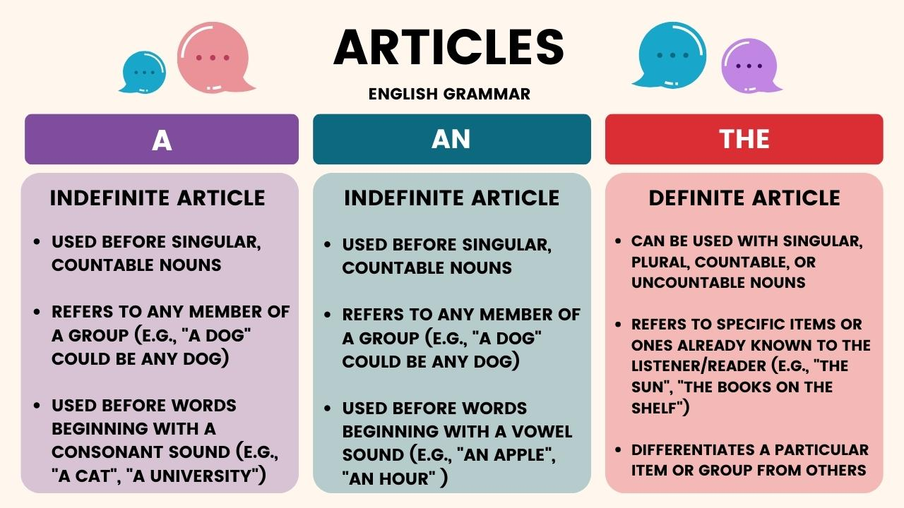

Learn articles easily
Articles in English grammar are tiny words that do a lot of work in sentences. Articles are how we understand whether somebody is talking about a specific noun or just any old noun. Sound confusing? Using articles in English grammar is easy. It’s the difference between a glass of water and the glass of water.
Learn articles
- In English grammar, articles are words that appear before nouns to indicate whether the noun is specific or general.
- Definite articles (the) are used to identify a specific noun or group of nouns, while indefinite articles (a, an) are used to identify a general noun or a noun whose identity is unknown. For example, “I want the apple” has a different meaning than “I want an apple."
- Use a when the noun or adjective that comes next begins with a consonant sound. Use an when the noun or adjective that comes next begins with a vowel sound.
- Don’t use indefinite articles with uncountable nouns or before pronouns. In these cases, simply omit articles.
Click the link below to practice
Click here
